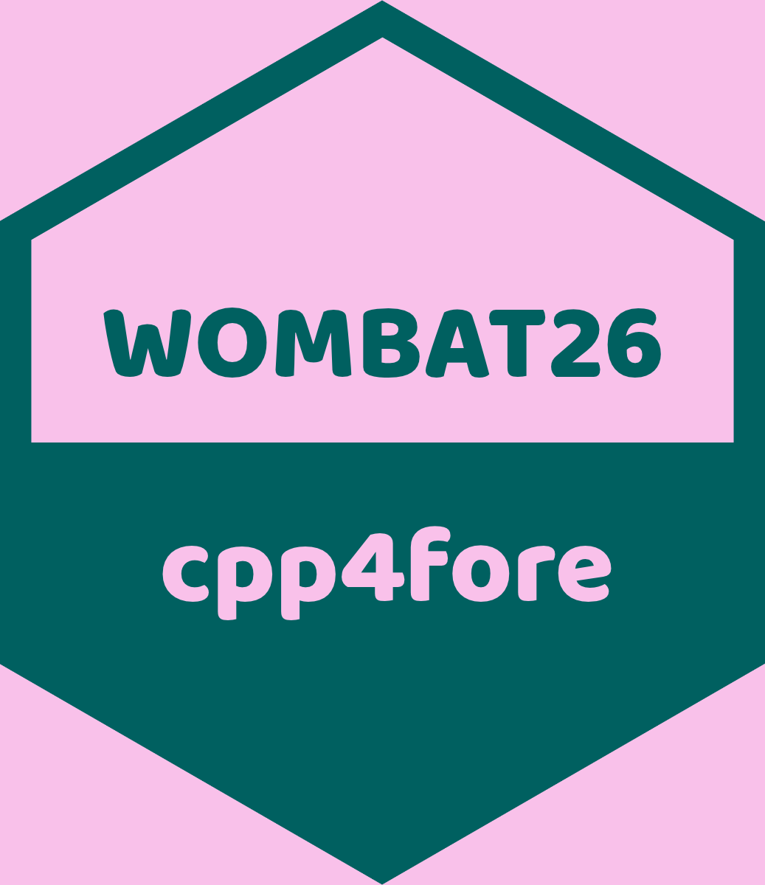
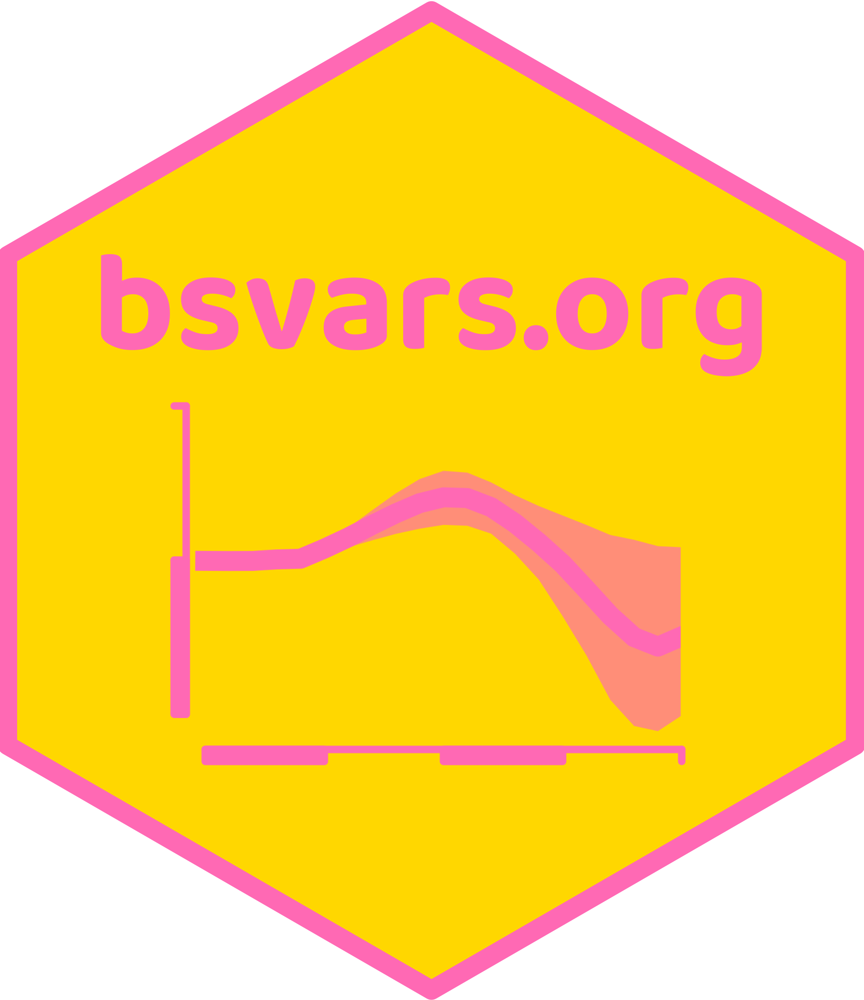
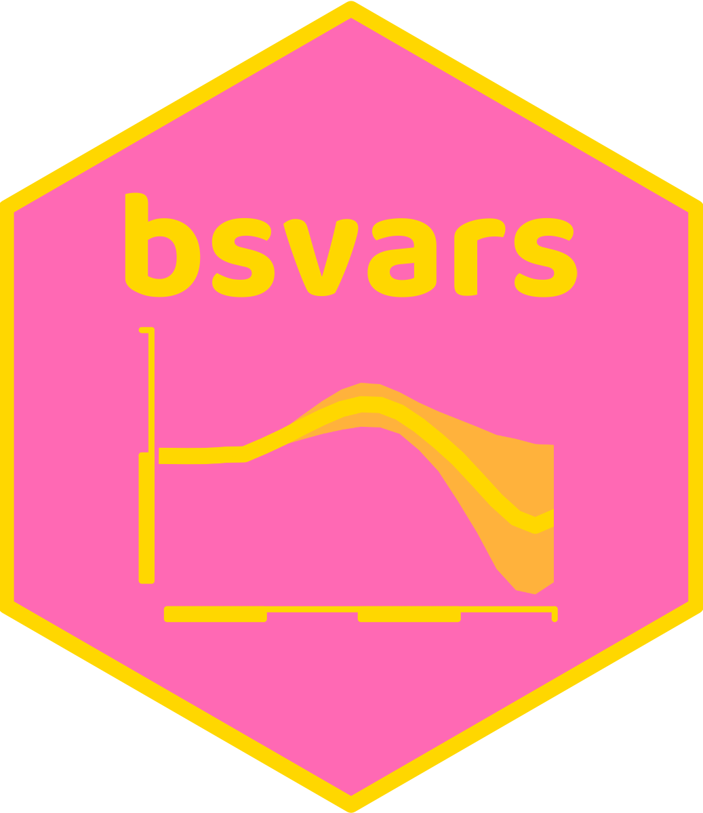
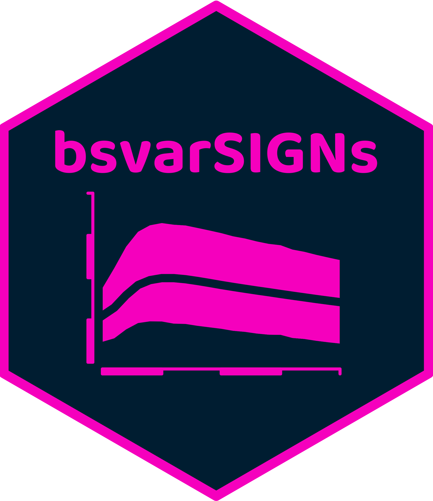
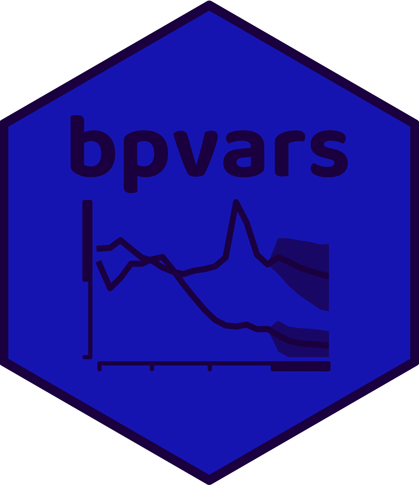
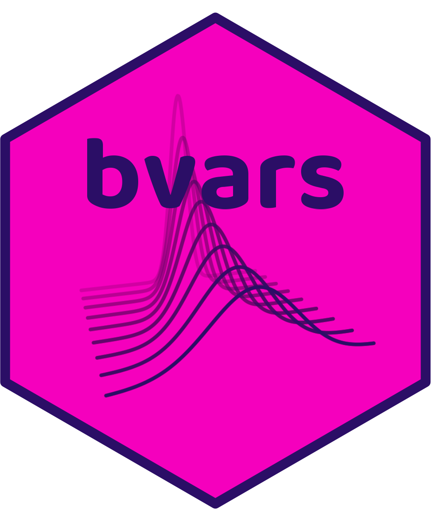
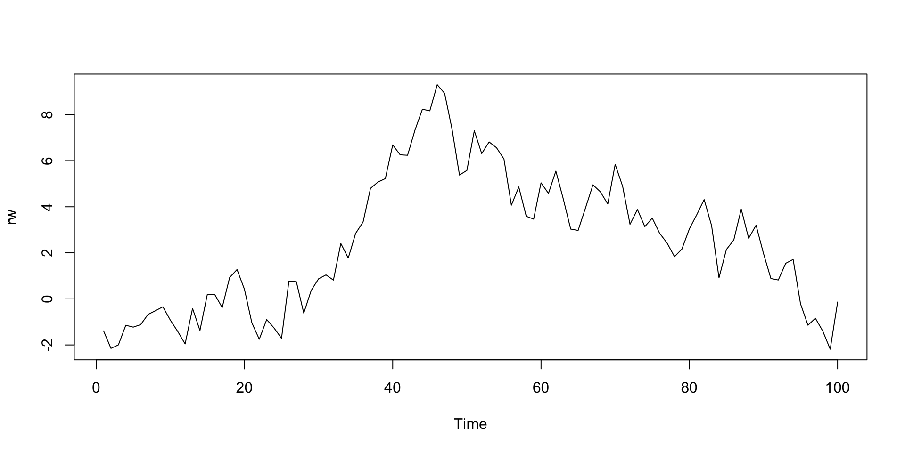
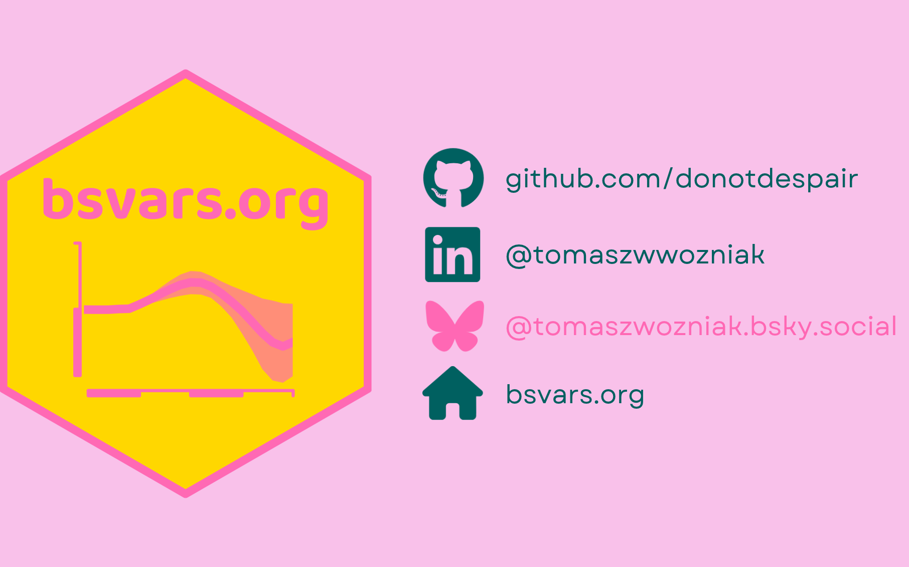

\[ \]
nicetry.cpp in RStudio by executing: Rcpp::sourceCpp("nicetry.cpp"). If you see a matrix with values 1, 2, and 3 in R, you’re good to go for the workshop.Consider the following C++ applications in R:
.cpp file
*.cpp file in R computations
Rcpp::cppFunction( # enables your C++ function in R
depends = "RcppArmadillo", # use RcppArmadillo
'DataFrame nicerw (int n) { // define the function and its argument
arma::vec rw(n, arma::fill::randn); // fill a vector with random draws
for (int i=1; i<n; i++) { // specify a loop
rw[i] += rw[i-1]; // update the vector elements
}
return DataFrame::create(_["rw"] = rw); // return a data frame with the vector
}'
)
set.seed(1)
plot.ts(nicerw(100)) # use the function to generate and plot the random walk
Your turn!
Copy/paste/modify the C++ function nicerw by the random walk using function cumsum.
Write an R function that generates a random walk using functions rnorm and cumsum, and returns the vec vector.
Benchmark the two functions using microbenchmark::microbenchmark().
.cpp fileA nicelr.cpp file sample contents:
#include <RcppArmadillo.h> // include RcppArmadillo header
// [[Rcpp::depends(RcppArmadillo)]] // include dependency
using namespace Rcpp; // declare namespace for Rcpp
using namespace arma; // declare namespace for Armadillo
// [[Rcpp::export]] // export the following function
List nicelr ( // declare output class and function name
vec y, // declare function arguments
mat x
) {
vec beta_hat = solve(x.t() * x, x.t() * y); // compute the OLS estimator
return List::create(_["beta_hat"] = beta_hat); // return the output as a list
}
/*** R
x = cbind(rep(1,5),1:5)
y = x %*% c(1,2) + rnorm(5)
nicelr(y, x) # use the function for computation in R
*/.cpp file in Rnicelr.cpp file contents:nicelr.cpp:.cpp fileYour turn!
nicelr function by computing the estimator of the error term variance to be computed as a real number class double:\[
\hat\sigma^2 = \frac{1}{T} \left( Y - X\hat\beta \right)'\left( Y - X\hat\beta \right)
\] 2. Extend the output List to include a new element sigma2_hat.
Hint: use functions .t(), .n_elem and as_scalar().
Normal-inverted gamma 2 distribution.
Random variables, an \(N\)-vector \(\mathbf{x}\) and a positive scalar, \(\sigma^2\), following the normal-inverted gamma 2 distribution with
\[ \]
Normal-inverted gamma 2 distribution. \[\begin{align*} \left(\mathbf{x}, \sigma^2\right) &\sim NIG2\left(\boldsymbol\mu, \boldsymbol\Sigma, s, \nu\right)\\[2ex] p\left(\mathbf{x}, \sigma^2\right) &= p\left(\mathbf{x} \mid \sigma^2\right)p\left(\sigma^2\right)\\[2ex] \sigma^2 &\sim IG2\left(s, \nu\right)\\ \mathbf{x} \mid \sigma^2 &\sim N\left(\boldsymbol\mu, \sigma^2\boldsymbol\Sigma\right) \end{align*}\]
Normal-inverted gamma 2 distribution. \[\begin{align*} \left(\mathbf{x}, \sigma^2\right) &\sim NIG2\left(\boldsymbol\mu, \boldsymbol\Sigma, s, \nu\right)\\[2ex] p\left(\mathbf{x}, \sigma^2\right) &= p\left(\mathbf{x} \mid \sigma^2\right)p\left(\sigma^2\right)\\[2ex] \sigma^2 &\sim IG2\left(s, \nu\right)\\ \mathbf{x} \mid \sigma^2 &\sim N\left(\boldsymbol\mu, \sigma^2\boldsymbol\Sigma\right) \end{align*}\]
\[ \]
To generate a random draw from the normal-inverted gamma 2 distribution:
\[ \]
To generate a random draw from the normal-inverted gamma 2 distribution:
zs / z as a random draw from \(IG2(s, \nu)\)Lymu + L * y as the random draw from \(N\left(\boldsymbol\mu, \sigma^2\boldsymbol\Sigma\right)\)Contents of a nicerig2.cpp file:
Your turn!
Complement the niceig2 function with another one that provides a random draw from the normal-inverted gamma 2 distribution.
muSigmasnuGet some help HERE.
Additional resources!
Have a look at my article on Simulation Smoother using RcppArmadillo at Rcpp Gallery.
nicerw_ex.Rnicelr_ex.cppnicerig2_ex.cpp\[ \]
\[ \]
